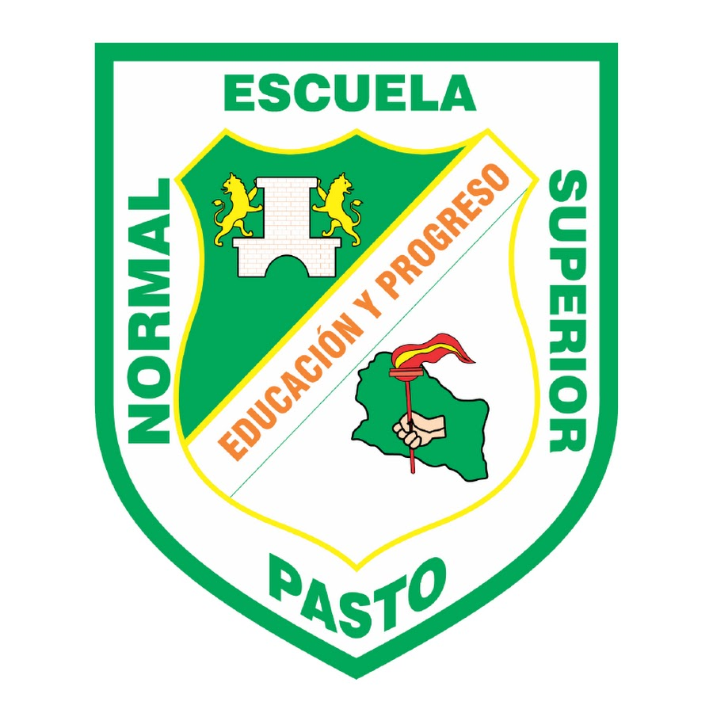
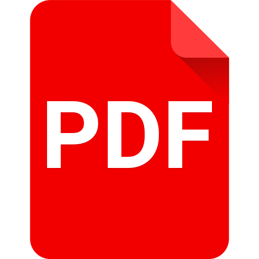

En esta primera actividad hablaremos acerca de mi contexto personal. En este caso,
mi nombre
es David Alejandro de la Rosa Criollo y tengo 19 años. Nací en la ciudad de Pasto y
toda mi vida he
pertenecido a un solo colegio, la Escuela Normal Superior. MI materia preferida
era el Ingles y la
lengua castellana, y mi profesor favorito fue mi profe Caros Caicedo. Mis
amigos más cercanos eran: Oscar
y Andres Revelo. Aun sigo teniendo una amistad con ellos,
aunque no hablamos tan seguido como antes. mis
padres son: Sandra Criollo
y Javier de la Rosa, y gracias a ellos he adquirido la pasion por docencia.

En esta segunda actividad, escuchamos un audio en donde se nos narraba una historia
llamada
"LA HISTORIA DE UN INFELIZ MELITÓN, DE UN AMOR Y UNA TRAICIÓN", en donde vemos
cómo a un vendedor, lo
estafan por el simple hecho de no saber hacer algunas operaciones
matematicas. Tambien nos enfocamos en sus
personajes e incluso definimos en qué consiste el
analfabetismo actual y funcional, y determinamos el estado
actual del mismo en nuestro
país y región. Al dar click en el icono de la derecha podra descargar
el
documento completo de esta actividad.

En resumen, Escuchamos un audio en donde entendemos un poco más el concepto
de las multinacionales. En esta
actividad, sintetizamos la historia del audio y
encontramos los diferentes personajes presentes en el mismo.
Ademas,
entendimos como operan estas empresas y cúal es la situacion de estas
en nuestro país.
Al dar click en el icono de la derecha podra
descargar el documento completo de esta actividad.
En esta actividad, escuchamos un audio en donde se cuenta una historia y
entendemos un poco más a qué
nos referimos al hablar de la deuda externa.
Ademas, describimos los personajes que encontramos en el mismo.
Descubrimos
el origen de la deuda externa de nuestro país y analizamos por qué
tenemos una y a cuanto asciende
la misma. Al dar click en el icono de la derecha podra
descargar el documento completo de esta actividad.
Con esta actividad, culminamos nuestro "contexto educativo" y entendemos un
poco mejor nuestra realidad como
país. Respondimos preguntas importantes
sobre el tema y, sobre todo, entendemos un poco más nuestro
entorno
como docentes. Al dar click en el icono de la derecha podra descargar
el documento completo
de esta actividad.